Code
# 필요한 라이브러리 설치 (Colab 환경)
!pip install -q nltk gensim scikit-learn pandas numpy matplotlib seaborn wordcloud
!pip install -q shap━━━━━━━━━━━━━━━━━━━━━━━━━━━━━━━━━━━━━━━━ 27.9/27.9 MB 35.9 MB/s eta 0:00:00
이주현
November 24, 2025
본 워크북은 의료 텍스트 데이터에서 감정 및 톤을 분석하고, 증상 표현의 긍정·부정 분류를 수행하는 NLP 파이프라인 구축을 포함합니다. 이론적 기반과 실무 문제 해결 능력을 동시에 강화할 수 있도록 설계되었습니다. 분석가는 다양한 텍스트 임베딩 기법과 머신러닝 모델의 점진적 성능 향상 과정을 고려해야 합니다.
진행률: 0% (분석 시작) 🔄 활용도: 학부 4학년 전공 실습
이 워크북을 통해 학습자는 다음을 실습하게 됩니다:
| 단계 | 주요 작업 내용 | 주요 도구/스킬 | 결과물 |
|---|---|---|---|
| 1단계 | 데이터 로드 및 탐색 | pandas, matplotlib | EDA 리포트 |
| 2단계 | 텍스트 전처리 (토큰화→불용어→정규화) | NLTK, re | 정제된 텍스트 |
| 3단계 | 임베딩 및 모델링 (BoW→TF-IDF→Word2Vec→앙상블) | Gensim, sklearn | 최적 분류 모델 |
| 4단계 | 성능 평가 | sklearn.metrics | 분류 성능 지표 |
| 5단계 | 모델 해석 | Feature Importance, SHAP | 중요 단어 목록 |
| 6단계 | 외부 검증 | Cross-validation | 일반화 성능 |
| 7단계 | 결과 리포트 작성 | Markdown | 최종 분석 보고서 |
이 워크북은 다음 기술/개념을 선행 학습한 학습자를 대상으로 합니다:
📌 데이터셋: Kaggle Medical Text Classification Dataset 📌 출처: https://www.kaggle.com/datasets/chaitanyakck/medical-text 📌 배경: 의료 문서에서 추출한 텍스트로, 다양한 의학적 상태와 증상을 설명하는 임상 기록을 포함합니다.
| 변수명 | 설명 |
|---|---|
| text | 의료 관련 텍스트 (증상, 진단, 치료 내용 등) |
| label | 분류 레이블 (의학적 상태/카테고리) |
━━━━━━━━━━━━━━━━━━━━━━━━━━━━━━━━━━━━━━━━ 27.9/27.9 MB 35.9 MB/s eta 0:00:00
# 기본 라이브러리
import pandas as pd
import numpy as np
import matplotlib.pyplot as plt
import seaborn as sns
import warnings
warnings.filterwarnings('ignore')
import os
import matplotlib.font_manager as fm
# 나눔 폰트 설치
!apt-get -qq -y install fonts-nanum
# 폰트 직접 등록
nanum_font_path = '/usr/share/fonts/truetype/nanum/NanumGothic.ttf'
if os.path.exists(nanum_font_path):
fe = fm.FontEntry(
fname=nanum_font_path,
name='NanumGothic'
)
fm.fontManager.ttflist.append(fe)
plt.rcParams['font.family'] = 'NanumGothic'
plt.rcParams['axes.unicode_minus'] = False
# matplotlib LaTeX 비활성화 ($ 기호 오류 방지)
print("✅ 한글 폰트 설정 완료!")
else:
print("⚠️ 한글 폰트를 찾을 수 없습니다.")
# 텍스트 처리
import re
import string
import nltk
from nltk.tokenize import word_tokenize
from nltk.corpus import stopwords
from nltk.stem import WordNetLemmatizer, PorterStemmer
from collections import Counter
# 임베딩
from sklearn.feature_extraction.text import CountVectorizer, TfidfVectorizer
from gensim.models import Word2Vec, FastText
# 모델링
from sklearn.model_selection import train_test_split, cross_val_score, StratifiedKFold, GridSearchCV
from sklearn.naive_bayes import MultinomialNB, GaussianNB
from sklearn.linear_model import LogisticRegression
from sklearn.ensemble import RandomForestClassifier, VotingClassifier, GradientBoostingClassifier
from sklearn.svm import SVC
# 평가
from sklearn.metrics import (
accuracy_score, precision_score, recall_score, f1_score,
classification_report, confusion_matrix, roc_auc_score, roc_curve
)
# 시각화
from wordcloud import WordCloud
# 모델 해석
import shap
# NLTK 데이터 다운로드
nltk.download('punkt')
nltk.download('stopwords')
nltk.download('wordnet')
nltk.download('punkt_tab')
# 재현성을 위한 시드 고정
RANDOM_STATE = 42
np.random.seed(RANDOM_STATE)
print("✅ 모든 라이브러리가 성공적으로 로드되었습니다.")Selecting previously unselected package fonts-nanum.
(Reading database ... 117528 files and directories currently installed.)
Preparing to unpack .../fonts-nanum_20200506-1_all.deb ...
Unpacking fonts-nanum (20200506-1) ...
Setting up fonts-nanum (20200506-1) ...
Processing triggers for fontconfig (2.13.1-4.2ubuntu5) ...
✅ 한글 폰트 설정 완료!✅ 모든 라이브러리가 성공적으로 로드되었습니다.from google.colab import files
files.upload()
!mkdir -p ~/.kaggle
!mv kaggle.json ~/.kaggle/
!chmod 600 ~/.kaggle/kaggle.json
# 정상 설정 확인
!ls ~/.kaggle
!cat ~/.kaggle/kaggle.json
!pip -q install kaggle
!mkdir -p /content/data
!kaggle datasets download -d chaitanyakck/medical-text -p /content/data
import zipfile, glob
zip_path = glob.glob("/content/data/*.zip")[0]
with zipfile.ZipFile(zip_path, "r") as z:
z.extractall("/content/data/medical-text")
print("✅ 압축 해제 완료")
import pandas as pd
# train.dat 로드 (레이블 있음)
train_df = pd.read_csv(
"/content/data/medical-text/train.dat",
sep="\t",
header=None,
names=["label", "text"]
)
# test.dat 로드 (레이블 없음 - 텍스트만)
test_df = pd.read_csv(
"/content/data/medical-text/test.dat",
sep="\t",
header=None,
names=["text"]
)
# test에는 레이블이 없으므로 train만 사용
df = train_df.copy()
print(f"✅ 데이터 로드 완료: train {len(train_df)}개 사용 (test는 레이블 없음)")
print(f"\n데이터 확인:")
print(df.head())
print(f"\n레이블 종류: {df['label'].unique()}")
print(f"레이블 개수: {df['label'].nunique()}개")Saving kaggle.json to kaggle.json
kaggle.json
{"username":"leejoohyun3","key":"ef89b88f6bab5309f23917b97755b189"}Dataset URL: https://www.kaggle.com/datasets/chaitanyakck/medical-text
License(s): CC0-1.0
Downloading medical-text.zip to /content/data
0% 0.00/11.6M [00:00<?, ?B/s]
100% 11.6M/11.6M [00:00<00:00, 1.06GB/s]
✅ 압축 해제 완료
✅ 데이터 로드 완료: train 14438개 사용 (test는 레이블 없음)
데이터 확인:
label text
0 4 Catheterization laboratory events and hospital...
1 5 Renal abscess in children. Three cases of rena...
2 2 Hyperplastic polyps seen at sigmoidoscopy are ...
3 5 Subclavian artery to innominate vein fistula a...
4 4 Effect of local inhibition of gamma-aminobutyr...
레이블 종류: [4 5 2 1 3]
레이블 개수: 5개# 데이터 기본 정보
print("=" * 50)
print("📋 데이터 기본 정보")
print("=" * 50)
print(f"\n총 샘플 수: {len(df)}")
print(f"컬럼: {list(df.columns)}")
print(f"\n데이터 타입:")
print(df.dtypes)
# 결측치 확인
print(f"\n결측치:")
print(df.isnull().sum())
# 레이블 분포
print(f"\n📊 레이블 분포:")
label_counts = df['label'].value_counts()
print(label_counts)
print(f"\n비율:")
print(df['label'].value_counts(normalize=True).round(3))==================================================
📋 데이터 기본 정보
==================================================
총 샘플 수: 14438
컬럼: ['label', 'text']
데이터 타입:
label int64
text object
dtype: object
결측치:
label 0
text 0
dtype: int64
📊 레이블 분포:
label
5 4805
1 3163
4 3051
3 1925
2 1494
Name: count, dtype: int64
비율:
label
5 0.333
1 0.219
4 0.211
3 0.133
2 0.103
Name: proportion, dtype: float64# 레이블 분포 시각화
fig, axes = plt.subplots(1, 2, figsize=(12, 4))
# 레이블 개수에 맞게 색상과 explode 설정
n_labels = len(label_counts)
colors = ['#2ecc71', '#e74c3c', '#3498db', '#f39c12', '#9b59b6'][:n_labels]
explode_values = [0.05] * n_labels
# 바 차트
ax1 = axes[0]
label_counts.plot(kind='bar', ax=ax1, color=colors, edgecolor='black')
ax1.set_title('레이블 분포', fontsize=14, fontweight='bold')
ax1.set_xlabel('레이블')
ax1.set_ylabel('빈도')
ax1.tick_params(axis='x', rotation=0)
# 파이 차트
ax2 = axes[1]
ax2.pie(label_counts.values, labels=label_counts.index, autopct='%1.1f%%',
colors=colors, explode=explode_values, shadow=True)
ax2.set_title('레이블 비율', fontsize=14, fontweight='bold')
plt.tight_layout()
plt.show()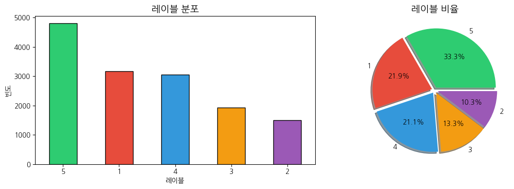
# 텍스트 길이 계산
df['text_length'] = df['text'].apply(len)
df['word_count'] = df['text'].apply(lambda x: len(x.split()))
# 통계량
print("=" * 50)
print("📏 텍스트 길이 통계")
print("=" * 50)
print(f"\n문자 수 통계:")
print(df['text_length'].describe().round(2))
print(f"\n단어 수 통계:")
print(df['word_count'].describe().round(2))==================================================
📏 텍스트 길이 통계
==================================================
문자 수 통계:
count 14438.00
mean 1230.67
std 507.35
min 170.00
25% 850.00
50% 1210.00
75% 1589.00
max 3999.00
Name: text_length, dtype: float64
단어 수 통계:
count 14438.00
mean 179.94
std 76.55
min 24.00
25% 122.00
50% 176.00
75% 235.00
max 596.00
Name: word_count, dtype: float64# 텍스트 길이 분포 시각화
fig, axes = plt.subplots(1, 2, figsize=(14, 5))
# 레이블별 문자 수 분포
for label, color in zip(['positive', 'negative'], colors):
subset = df[df['label'] == label]['text_length']
axes[0].hist(subset, bins=20, alpha=0.6, label=label, color=color, edgecolor='black')
axes[0].set_xlabel('문자 수')
axes[0].set_ylabel('빈도')
axes[0].set_title('레이블별 텍스트 문자 수 분포', fontsize=14, fontweight='bold')
axes[0].legend()
# 레이블별 단어 수 박스플롯
df.boxplot(column='word_count', by='label', ax=axes[1])
axes[1].set_xlabel('레이블')
axes[1].set_ylabel('단어 수')
axes[1].set_title('레이블별 단어 수 분포', fontsize=14, fontweight='bold')
plt.suptitle('')
plt.tight_layout()
plt.show()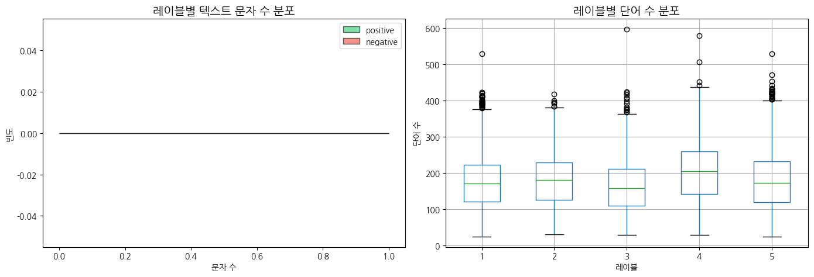
fig, axes = plt.subplots(1, 2, figsize=(14, 5))
# 방법 1: 숫자 레이블을 positive/negative로 매핑
# 일반적으로 1-2는 negative, 4-5는 positive로 분류
df['sentiment'] = df['label'].apply(lambda x: 'negative' if x <= 2 else ('positive' if x >= 4 else 'neutral'))
# 레이블별 문자 수 분포
for label, color in zip(['negative', 'positive'], ['#e74c3c', '#2ecc71']):
subset = df[df['sentiment'] == label]['text_length']
axes[0].hist(subset, bins=20, alpha=0.6, label=label, color=color, edgecolor='black')
axes[0].set_xlabel('문자 수')
axes[0].set_ylabel('빈도')
axes[0].set_title('레이블별 텍스트 문자 수 분포', fontsize=14, fontweight='bold')
axes[0].legend()
# 레이블별 단어 수 박스플롯 (원본 label 사용)
df.boxplot(column='word_count', by='label', ax=axes[1])
axes[1].set_xlabel('레이블')
axes[1].set_ylabel('단어 수')
axes[1].set_title('레이블별 단어 수 분포', fontsize=14, fontweight='bold')
plt.suptitle('')
plt.tight_layout()
plt.show()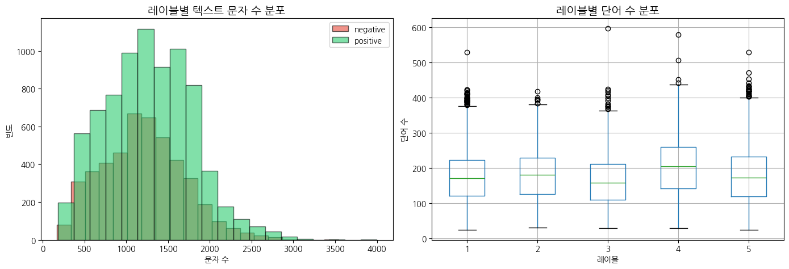
🔍 학습 포인트 #1: 데이터 탐색의 중요성
의료 텍스트 분석에서 데이터 탐색(EDA)은 다음과 같은 이유로 중요합니다:
클래스 불균형 확인: 의료 데이터는 종종 특정 레이블이 더 많은 불균형 데이터입니다. 이를 사전에 파악해야 적절한 샘플링 전략을 수립할 수 있습니다.
텍스트 길이 분포: 텍스트 길이가 레이블과 상관관계가 있다면, 이는 모델의 편향 원인이 될 수 있습니다.
데이터 품질: 결측치, 중복, 이상치 등을 미리 파악하여 전처리 전략을 수립합니다.
def basic_tokenize(text):
"""
기본 토큰화: 소문자 변환 및 단어 분리
"""
# 소문자 변환
text = text.lower()
# 기본 토큰화
tokens = word_tokenize(text)
return tokens
# 기본 토큰화 적용
df['tokens_basic'] = df['text'].apply(basic_tokenize)
# 결과 확인
print("📝 기본 토큰화 결과 예시:")
print(f"\n원문: {df['text'].iloc[0]}")
print(f"토큰: {df['tokens_basic'].iloc[0]}")📝 기본 토큰화 결과 예시:
원문: Catheterization laboratory events and hospital outcome with direct angioplasty for acute myocardial infarction To assess the safety of direct infarct angioplasty without antecedent thrombolytic therapy, catheterization laboratory and hospital events were assessed in consecutively treated patients with infarctions involving the left anterior descending (n = 100 patients), right (n = 100), and circumflex (n = 50) coronary arteries. The groups of patients were similar for age (left anterior descending coronary artery, 59 years; right coronary artery, 58 years; circumflex coronary artery, 62 years), patients with multivessel disease (left anterior descending coronary artery, 55%; right coronary artery, 55%; circumflex coronary artery, 64%), and patients with initial grade 0/1 antegrade flow (left anterior descending coronary artery, 79%; right coronary artery, 84%; circumflex coronary artery, 90%). Cardiogenic shock was present in eight patients with infarction of the left anterior descending coronary artery, four with infarction of the right coronary artery, and four with infarction of the circumflex coronary artery. Major catheterization laboratory events (cardioversion, cardiopulmonary resuscitation, dopamine or intra-aortic balloon pump support for hypotension, and urgent surgery) occurred in 10 patients with infarction of the left anterior descending coronary artery, eight with infarction of the right coronary artery, and four with infarction of the circumflex coronary artery (16 of 16 shock and six of 234 nonshock patients, p less than 0.001). There was one in-laboratory death (shock patient with infarction of the left anterior descending coronary artery).
토큰: ['catheterization', 'laboratory', 'events', 'and', 'hospital', 'outcome', 'with', 'direct', 'angioplasty', 'for', 'acute', 'myocardial', 'infarction', 'to', 'assess', 'the', 'safety', 'of', 'direct', 'infarct', 'angioplasty', 'without', 'antecedent', 'thrombolytic', 'therapy', ',', 'catheterization', 'laboratory', 'and', 'hospital', 'events', 'were', 'assessed', 'in', 'consecutively', 'treated', 'patients', 'with', 'infarctions', 'involving', 'the', 'left', 'anterior', 'descending', '(', 'n', '=', '100', 'patients', ')', ',', 'right', '(', 'n', '=', '100', ')', ',', 'and', 'circumflex', '(', 'n', '=', '50', ')', 'coronary', 'arteries', '.', 'the', 'groups', 'of', 'patients', 'were', 'similar', 'for', 'age', '(', 'left', 'anterior', 'descending', 'coronary', 'artery', ',', '59', 'years', ';', 'right', 'coronary', 'artery', ',', '58', 'years', ';', 'circumflex', 'coronary', 'artery', ',', '62', 'years', ')', ',', 'patients', 'with', 'multivessel', 'disease', '(', 'left', 'anterior', 'descending', 'coronary', 'artery', ',', '55', '%', ';', 'right', 'coronary', 'artery', ',', '55', '%', ';', 'circumflex', 'coronary', 'artery', ',', '64', '%', ')', ',', 'and', 'patients', 'with', 'initial', 'grade', '0/1', 'antegrade', 'flow', '(', 'left', 'anterior', 'descending', 'coronary', 'artery', ',', '79', '%', ';', 'right', 'coronary', 'artery', ',', '84', '%', ';', 'circumflex', 'coronary', 'artery', ',', '90', '%', ')', '.', 'cardiogenic', 'shock', 'was', 'present', 'in', 'eight', 'patients', 'with', 'infarction', 'of', 'the', 'left', 'anterior', 'descending', 'coronary', 'artery', ',', 'four', 'with', 'infarction', 'of', 'the', 'right', 'coronary', 'artery', ',', 'and', 'four', 'with', 'infarction', 'of', 'the', 'circumflex', 'coronary', 'artery', '.', 'major', 'catheterization', 'laboratory', 'events', '(', 'cardioversion', ',', 'cardiopulmonary', 'resuscitation', ',', 'dopamine', 'or', 'intra-aortic', 'balloon', 'pump', 'support', 'for', 'hypotension', ',', 'and', 'urgent', 'surgery', ')', 'occurred', 'in', '10', 'patients', 'with', 'infarction', 'of', 'the', 'left', 'anterior', 'descending', 'coronary', 'artery', ',', 'eight', 'with', 'infarction', 'of', 'the', 'right', 'coronary', 'artery', ',', 'and', 'four', 'with', 'infarction', 'of', 'the', 'circumflex', 'coronary', 'artery', '(', '16', 'of', '16', 'shock', 'and', 'six', 'of', '234', 'nonshock', 'patients', ',', 'p', 'less', 'than', '0.001', ')', '.', 'there', 'was', 'one', 'in-laboratory', 'death', '(', 'shock', 'patient', 'with', 'infarction', 'of', 'the', 'left', 'anterior', 'descending', 'coronary', 'artery', ')', '.']🔍 학습 포인트 #2: 토큰화의 기초
토큰화(Tokenization)는 텍스트를 의미 있는 단위(토큰)로 분리하는 과정입니다:
# 불용어 정의
stop_words = set(stopwords.words('english'))
# 의료 도메인 불용어 추가 (분석에 불필요한 일반적 의료 용어)
medical_stop_words = {'patient', 'patients', 'doctor', 'hospital', 'medical', 'treatment'}
custom_stop_words = stop_words.union(medical_stop_words)
# Lemmatizer 초기화
lemmatizer = WordNetLemmatizer()
def advanced_preprocess(text):
"""
고급 전처리: 토큰화 + 불용어 제거 + Lemmatization
"""
# 소문자 변환
text = text.lower()
# 특수문자 제거 (의료 약어 보존)
text = re.sub(r'[^a-zA-Z0-9\s\-]', '', text)
# 토큰화
tokens = word_tokenize(text)
# 불용어 제거 및 Lemmatization
processed_tokens = [
lemmatizer.lemmatize(token)
for token in tokens
if token not in custom_stop_words and len(token) > 2
]
return processed_tokens
# 고급 전처리 적용
df['tokens_advanced'] = df['text'].apply(advanced_preprocess)
# 결과 비교
print("📝 전처리 전후 비교:")
print(f"\n원문: {df['text'].iloc[0]}")
print(f"기본 토큰화: {df['tokens_basic'].iloc[0]}")
print(f"고급 전처리: {df['tokens_advanced'].iloc[0]}")📝 전처리 전후 비교:
원문: Catheterization laboratory events and hospital outcome with direct angioplasty for acute myocardial infarction To assess the safety of direct infarct angioplasty without antecedent thrombolytic therapy, catheterization laboratory and hospital events were assessed in consecutively treated patients with infarctions involving the left anterior descending (n = 100 patients), right (n = 100), and circumflex (n = 50) coronary arteries. The groups of patients were similar for age (left anterior descending coronary artery, 59 years; right coronary artery, 58 years; circumflex coronary artery, 62 years), patients with multivessel disease (left anterior descending coronary artery, 55%; right coronary artery, 55%; circumflex coronary artery, 64%), and patients with initial grade 0/1 antegrade flow (left anterior descending coronary artery, 79%; right coronary artery, 84%; circumflex coronary artery, 90%). Cardiogenic shock was present in eight patients with infarction of the left anterior descending coronary artery, four with infarction of the right coronary artery, and four with infarction of the circumflex coronary artery. Major catheterization laboratory events (cardioversion, cardiopulmonary resuscitation, dopamine or intra-aortic balloon pump support for hypotension, and urgent surgery) occurred in 10 patients with infarction of the left anterior descending coronary artery, eight with infarction of the right coronary artery, and four with infarction of the circumflex coronary artery (16 of 16 shock and six of 234 nonshock patients, p less than 0.001). There was one in-laboratory death (shock patient with infarction of the left anterior descending coronary artery).
기본 토큰화: ['catheterization', 'laboratory', 'events', 'and', 'hospital', 'outcome', 'with', 'direct', 'angioplasty', 'for', 'acute', 'myocardial', 'infarction', 'to', 'assess', 'the', 'safety', 'of', 'direct', 'infarct', 'angioplasty', 'without', 'antecedent', 'thrombolytic', 'therapy', ',', 'catheterization', 'laboratory', 'and', 'hospital', 'events', 'were', 'assessed', 'in', 'consecutively', 'treated', 'patients', 'with', 'infarctions', 'involving', 'the', 'left', 'anterior', 'descending', '(', 'n', '=', '100', 'patients', ')', ',', 'right', '(', 'n', '=', '100', ')', ',', 'and', 'circumflex', '(', 'n', '=', '50', ')', 'coronary', 'arteries', '.', 'the', 'groups', 'of', 'patients', 'were', 'similar', 'for', 'age', '(', 'left', 'anterior', 'descending', 'coronary', 'artery', ',', '59', 'years', ';', 'right', 'coronary', 'artery', ',', '58', 'years', ';', 'circumflex', 'coronary', 'artery', ',', '62', 'years', ')', ',', 'patients', 'with', 'multivessel', 'disease', '(', 'left', 'anterior', 'descending', 'coronary', 'artery', ',', '55', '%', ';', 'right', 'coronary', 'artery', ',', '55', '%', ';', 'circumflex', 'coronary', 'artery', ',', '64', '%', ')', ',', 'and', 'patients', 'with', 'initial', 'grade', '0/1', 'antegrade', 'flow', '(', 'left', 'anterior', 'descending', 'coronary', 'artery', ',', '79', '%', ';', 'right', 'coronary', 'artery', ',', '84', '%', ';', 'circumflex', 'coronary', 'artery', ',', '90', '%', ')', '.', 'cardiogenic', 'shock', 'was', 'present', 'in', 'eight', 'patients', 'with', 'infarction', 'of', 'the', 'left', 'anterior', 'descending', 'coronary', 'artery', ',', 'four', 'with', 'infarction', 'of', 'the', 'right', 'coronary', 'artery', ',', 'and', 'four', 'with', 'infarction', 'of', 'the', 'circumflex', 'coronary', 'artery', '.', 'major', 'catheterization', 'laboratory', 'events', '(', 'cardioversion', ',', 'cardiopulmonary', 'resuscitation', ',', 'dopamine', 'or', 'intra-aortic', 'balloon', 'pump', 'support', 'for', 'hypotension', ',', 'and', 'urgent', 'surgery', ')', 'occurred', 'in', '10', 'patients', 'with', 'infarction', 'of', 'the', 'left', 'anterior', 'descending', 'coronary', 'artery', ',', 'eight', 'with', 'infarction', 'of', 'the', 'right', 'coronary', 'artery', ',', 'and', 'four', 'with', 'infarction', 'of', 'the', 'circumflex', 'coronary', 'artery', '(', '16', 'of', '16', 'shock', 'and', 'six', 'of', '234', 'nonshock', 'patients', ',', 'p', 'less', 'than', '0.001', ')', '.', 'there', 'was', 'one', 'in-laboratory', 'death', '(', 'shock', 'patient', 'with', 'infarction', 'of', 'the', 'left', 'anterior', 'descending', 'coronary', 'artery', ')', '.']
고급 전처리: ['catheterization', 'laboratory', 'event', 'outcome', 'direct', 'angioplasty', 'acute', 'myocardial', 'infarction', 'assess', 'safety', 'direct', 'infarct', 'angioplasty', 'without', 'antecedent', 'thrombolytic', 'therapy', 'catheterization', 'laboratory', 'event', 'assessed', 'consecutively', 'treated', 'infarction', 'involving', 'left', 'anterior', 'descending', '100', 'right', '100', 'circumflex', 'coronary', 'artery', 'group', 'similar', 'age', 'left', 'anterior', 'descending', 'coronary', 'artery', 'year', 'right', 'coronary', 'artery', 'year', 'circumflex', 'coronary', 'artery', 'year', 'multivessel', 'disease', 'left', 'anterior', 'descending', 'coronary', 'artery', 'right', 'coronary', 'artery', 'circumflex', 'coronary', 'artery', 'initial', 'grade', 'antegrade', 'flow', 'left', 'anterior', 'descending', 'coronary', 'artery', 'right', 'coronary', 'artery', 'circumflex', 'coronary', 'artery', 'cardiogenic', 'shock', 'present', 'eight', 'infarction', 'left', 'anterior', 'descending', 'coronary', 'artery', 'four', 'infarction', 'right', 'coronary', 'artery', 'four', 'infarction', 'circumflex', 'coronary', 'artery', 'major', 'catheterization', 'laboratory', 'event', 'cardioversion', 'cardiopulmonary', 'resuscitation', 'dopamine', 'intra-aortic', 'balloon', 'pump', 'support', 'hypotension', 'urgent', 'surgery', 'occurred', 'infarction', 'left', 'anterior', 'descending', 'coronary', 'artery', 'eight', 'infarction', 'right', 'coronary', 'artery', 'four', 'infarction', 'circumflex', 'coronary', 'artery', 'shock', 'six', '234', 'nonshock', 'less', '0001', 'one', 'in-laboratory', 'death', 'shock', 'infarction', 'left', 'anterior', 'descending', 'coronary', 'artery']# 전처리 전후 토큰 수 비교
df['token_count_basic'] = df['tokens_basic'].apply(len)
df['token_count_advanced'] = df['tokens_advanced'].apply(len)
print("📊 전처리 전후 토큰 수 비교:")
print(f"\n기본 토큰화 평균 토큰 수: {df['token_count_basic'].mean():.2f}")
print(f"고급 전처리 평균 토큰 수: {df['token_count_advanced'].mean():.2f}")
print(f"평균 감소율: {(1 - df['token_count_advanced'].mean() / df['token_count_basic'].mean()) * 100:.1f}%")📊 전처리 전후 토큰 수 비교:
기본 토큰화 평균 토큰 수: 205.54
고급 전처리 평균 토큰 수: 104.33
평균 감소율: 49.2%🔍 학습 포인트 #3: 불용어 제거와 Lemmatization
불용어 제거 (Stopword Removal) - 분석에 의미 없는 고빈도 단어(the, is, a 등) 제거 - 도메인 특화 불용어 추가로 노이즈 감소
Lemmatization vs Stemming - Stemming: 규칙 기반 어간 추출 (running → run, studies → studi) - Lemmatization: 사전 기반 표제어 추출 (running → run, studies → study) - 의료 텍스트에서는 Lemmatization이 더 정확한 결과 제공
# 의학 용어 정규화 사전
medical_normalization = {
# 증상 관련
'temp': 'temperature',
'bp': 'blood pressure',
'hr': 'heart rate',
'resp': 'respiratory',
'abd': 'abdominal',
# 상태 관련
'neg': 'negative',
'pos': 'positive',
'abn': 'abnormal',
'nml': 'normal',
# 부정적 상태 동의어 정규화
'worsening': 'deterioration',
'declining': 'deterioration',
'worsened': 'deterioration',
'deteriorated': 'deterioration',
'deteriorating': 'deterioration',
# 긍정적 상태 동의어 정규화
'improving': 'improvement',
'improved': 'improvement',
'better': 'improvement',
'recovery': 'improvement',
'recovered': 'improvement',
}
def medical_normalize(tokens):
"""
의학 용어 정규화: 약어 확장 및 동의어 통합
"""
normalized = []
for token in tokens:
# 약어 및 동의어 정규화
if token in medical_normalization:
normalized.extend(medical_normalization[token].split())
else:
normalized.append(token)
return normalized
def full_preprocess(text):
"""
완전한 전처리 파이프라인: 토큰화 → 불용어 제거 → Lemmatization → 의학 용어 정규화
"""
# 기본 전처리
tokens = advanced_preprocess(text)
# 의학 용어 정규화
tokens = medical_normalize(tokens)
return tokens
# 완전한 전처리 적용
df['tokens_final'] = df['text'].apply(full_preprocess)
# 결과 확인
print("📝 전처리 단계별 비교:")
idx = 1 # 예시 인덱스
print(f"\n원문: {df['text'].iloc[idx]}")
print(f"기본: {df['tokens_basic'].iloc[idx]}")
print(f"고급: {df['tokens_advanced'].iloc[idx]}")
print(f"최종: {df['tokens_final'].iloc[idx]}")📝 전처리 단계별 비교:
원문: Renal abscess in children. Three cases of renal abscesses in children are described to illustrate the variable presenting features. An additional 23 pediatric cases, reported over the past ten years, were reviewed for clinical features and therapy. Fever, loin pain, and leukocytosis were common presenting features, but less than half of all abscesses were associated with either an abnormal urinalysis or a positive urine culture. The presenting features were sometimes confused with appendicitis, peritonitis, or a Wilms tumor. An organism was identified in 17 cases--Escherichia coli in 9 children and Staphylococcus aureus in 8 children. The majority of E. coli infections occurred in girls and the majority of S. aureus infections occurred in boys. Reflux was documented in 5 patients, and 2 children had a possible extrarenal source of infection. Antibiotics alone produced a cure in 10 children (38%), but 16 children (62%) required a surgical procedure.
기본: ['renal', 'abscess', 'in', 'children', '.', 'three', 'cases', 'of', 'renal', 'abscesses', 'in', 'children', 'are', 'described', 'to', 'illustrate', 'the', 'variable', 'presenting', 'features', '.', 'an', 'additional', '23', 'pediatric', 'cases', ',', 'reported', 'over', 'the', 'past', 'ten', 'years', ',', 'were', 'reviewed', 'for', 'clinical', 'features', 'and', 'therapy', '.', 'fever', ',', 'loin', 'pain', ',', 'and', 'leukocytosis', 'were', 'common', 'presenting', 'features', ',', 'but', 'less', 'than', 'half', 'of', 'all', 'abscesses', 'were', 'associated', 'with', 'either', 'an', 'abnormal', 'urinalysis', 'or', 'a', 'positive', 'urine', 'culture', '.', 'the', 'presenting', 'features', 'were', 'sometimes', 'confused', 'with', 'appendicitis', ',', 'peritonitis', ',', 'or', 'a', 'wilms', 'tumor', '.', 'an', 'organism', 'was', 'identified', 'in', '17', 'cases', '--', 'escherichia', 'coli', 'in', '9', 'children', 'and', 'staphylococcus', 'aureus', 'in', '8', 'children', '.', 'the', 'majority', 'of', 'e.', 'coli', 'infections', 'occurred', 'in', 'girls', 'and', 'the', 'majority', 'of', 's.', 'aureus', 'infections', 'occurred', 'in', 'boys', '.', 'reflux', 'was', 'documented', 'in', '5', 'patients', ',', 'and', '2', 'children', 'had', 'a', 'possible', 'extrarenal', 'source', 'of', 'infection', '.', 'antibiotics', 'alone', 'produced', 'a', 'cure', 'in', '10', 'children', '(', '38', '%', ')', ',', 'but', '16', 'children', '(', '62', '%', ')', 'required', 'a', 'surgical', 'procedure', '.']
고급: ['renal', 'abscess', 'child', 'three', 'case', 'renal', 'abscess', 'child', 'described', 'illustrate', 'variable', 'presenting', 'feature', 'additional', 'pediatric', 'case', 'reported', 'past', 'ten', 'year', 'reviewed', 'clinical', 'feature', 'therapy', 'fever', 'loin', 'pain', 'leukocytosis', 'common', 'presenting', 'feature', 'less', 'half', 'abscess', 'associated', 'either', 'abnormal', 'urinalysis', 'positive', 'urine', 'culture', 'presenting', 'feature', 'sometimes', 'confused', 'appendicitis', 'peritonitis', 'wilms', 'tumor', 'organism', 'identified', 'case', 'escherichia', 'coli', 'child', 'staphylococcus', 'aureus', 'child', 'majority', 'coli', 'infection', 'occurred', 'girl', 'majority', 'aureus', 'infection', 'occurred', 'boy', 'reflux', 'documented', 'child', 'possible', 'extrarenal', 'source', 'infection', 'antibiotic', 'alone', 'produced', 'cure', 'child', 'child', 'required', 'surgical', 'procedure']
최종: ['renal', 'abscess', 'child', 'three', 'case', 'renal', 'abscess', 'child', 'described', 'illustrate', 'variable', 'presenting', 'feature', 'additional', 'pediatric', 'case', 'reported', 'past', 'ten', 'year', 'reviewed', 'clinical', 'feature', 'therapy', 'fever', 'loin', 'pain', 'leukocytosis', 'common', 'presenting', 'feature', 'less', 'half', 'abscess', 'associated', 'either', 'abnormal', 'urinalysis', 'positive', 'urine', 'culture', 'presenting', 'feature', 'sometimes', 'confused', 'appendicitis', 'peritonitis', 'wilms', 'tumor', 'organism', 'identified', 'case', 'escherichia', 'coli', 'child', 'staphylococcus', 'aureus', 'child', 'majority', 'coli', 'infection', 'occurred', 'girl', 'majority', 'aureus', 'infection', 'occurred', 'boy', 'reflux', 'documented', 'child', 'possible', 'extrarenal', 'source', 'infection', 'antibiotic', 'alone', 'produced', 'cure', 'child', 'child', 'required', 'surgical', 'procedure']🔍 학습 포인트 #4: 도메인 특화 전처리의 가치
의료 텍스트 분석에서 도메인 지식을 활용한 전처리는 성능 향상에 핵심적입니다:
# 각 전처리 단계별 고유 토큰 수 계산
all_tokens_basic = [token for tokens in df['tokens_basic'] for token in tokens]
all_tokens_advanced = [token for tokens in df['tokens_advanced'] for token in tokens]
all_tokens_final = [token for tokens in df['tokens_final'] for token in tokens]
unique_basic = len(set(all_tokens_basic))
unique_advanced = len(set(all_tokens_advanced))
unique_final = len(set(all_tokens_final))
# 결과 출력
print("=" * 50)
print("📊 전처리 단계별 어휘 크기 비교")
print("=" * 50)
print(f"\n기본 토큰화: {unique_basic:,} 고유 토큰")
print(f"고급 전처리: {unique_advanced:,} 고유 토큰 (감소율: {(1-unique_advanced/unique_basic)*100:.1f}%)")
print(f"최종 전처리: {unique_final:,} 고유 토큰 (감소율: {(1-unique_final/unique_basic)*100:.1f}%)")==================================================
📊 전처리 단계별 어휘 크기 비교
==================================================
기본 토큰화: 54,895 고유 토큰
고급 전처리: 48,672 고유 토큰 (감소율: 11.3%)
최종 전처리: 48,658 고유 토큰 (감소율: 11.4%)# 어휘 크기 시각화
stages = ['기본 토큰화', '고급 전처리', '최종 전처리']
vocab_sizes = [unique_basic, unique_advanced, unique_final]
plt.figure(figsize=(10, 5))
bars = plt.bar(stages, vocab_sizes, color=['#3498db', '#2ecc71', '#e74c3c'], edgecolor='black')
plt.title('전처리 단계별 어휘 크기 변화', fontsize=14, fontweight='bold')
plt.ylabel('고유 토큰 수')
# 막대 위에 값 표시
for bar, val in zip(bars, vocab_sizes):
plt.text(bar.get_x() + bar.get_width()/2, bar.get_height() + 5,
f'{val:,}', ha='center', va='bottom', fontsize=12)
plt.tight_layout()
plt.show()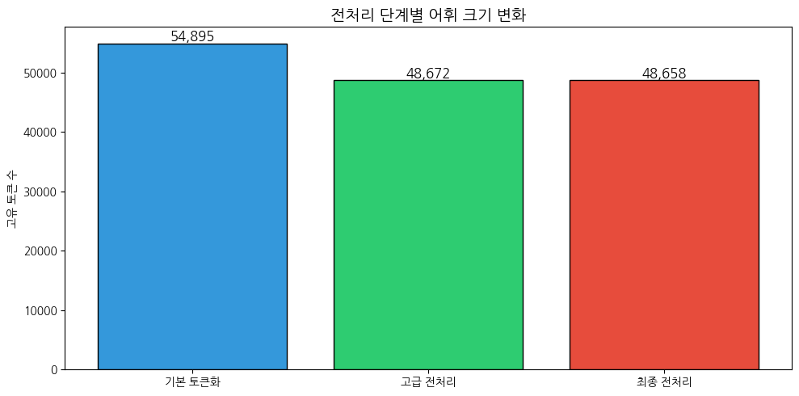
# 레이블별 상위 빈출 단어 분석
def get_top_words(df, label, token_col, n=15):
tokens = [token for tokens in df[df['sentiment'] == label][token_col] for token in tokens]
return Counter(tokens).most_common(n)
# 최종 전처리 토큰 기준 상위 단어
top_positive = get_top_words(df, 'positive', 'tokens_final')
top_negative = get_top_words(df, 'negative', 'tokens_final')
print("📊 레이블별 상위 빈출 단어 (최종 전처리 기준)")
print("\n✅ Positive:")
for word, count in top_positive:
print(f" {word}: {count}")
print("\n❌ Negative:")
for word, count in top_negative:
print(f" {word}: {count}")📊 레이블별 상위 빈출 단어 (최종 전처리 기준)
✅ Positive:
group: 5661
less: 4996
study: 4404
disease: 4083
artery: 3406
blood: 3361
coronary: 3353
case: 3177
year: 3115
pressure: 2956
result: 2880
rate: 2831
ventricular: 2818
effect: 2799
two: 2798
❌ Negative:
cell: 4906
tumor: 4213
cancer: 3163
disease: 2834
case: 2723
carcinoma: 2577
study: 2399
group: 2096
less: 1832
one: 1747
two: 1738
year: 1599
may: 1592
result: 1556
therapy: 1510# WordCloud 시각화
fig, axes = plt.subplots(1, 2, figsize=(16, 6))
# sentiment 컬럼을 사용하도록 수정 (앞에서 생성한 컬럼)
for ax, label, color in zip(axes, ['positive', 'negative'], ['Greens', 'Reds']):
tokens = [token for tokens in df[df['sentiment'] == label]['tokens_final'] for token in tokens]
text = ' '.join(tokens)
wordcloud = WordCloud(
width=800, height=400,
background_color='white',
colormap=color,
max_words=50
).generate(text)
ax.imshow(wordcloud, interpolation='bilinear')
ax.set_title(f'{label.capitalize()} 텍스트 워드클라우드', fontsize=14, fontweight='bold')
ax.axis('off')
plt.tight_layout()
plt.show()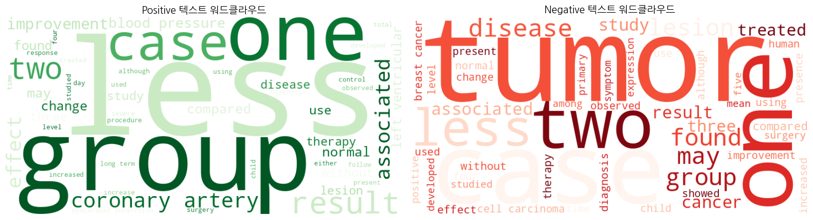
# sentiment 컬럼을 사용하여 레이블 인코딩
label_map = {'positive': 1, 'negative': 0}
df['label_encoded'] = df['sentiment'].map(label_map)
# neutral은 제외하거나 별도 처리
# 방법 1: neutral 제외
df_binary = df[df['sentiment'].isin(['positive', 'negative'])].copy()
# 전처리된 텍스트를 문자열로 변환
df_binary['text_processed'] = df_binary['tokens_final'].apply(lambda x: ' '.join(x))
# 데이터 분할 (Train 70%, Validation 15%, Test 15%)
X = df_binary['text_processed']
y = df_binary['label_encoded']
# Train / Temp 분할
X_train, X_temp, y_train, y_temp = train_test_split(
X, y, test_size=0.3, random_state=RANDOM_STATE, stratify=y
)
# Validation / Test 분할
X_val, X_test, y_val, y_test = train_test_split(
X_temp, y_temp, test_size=0.5, random_state=RANDOM_STATE, stratify=y_temp
)
print("📊 데이터 분할 결과:")
print(f"\nTrain: {len(X_train)} 샘플 ({len(X_train)/len(X)*100:.1f}%)")
print(f"Validation: {len(X_val)} 샘플 ({len(X_val)/len(X)*100:.1f}%)")
print(f"Test: {len(X_test)} 샘플 ({len(X_test)/len(X)*100:.1f}%)")📊 데이터 분할 결과:
Train: 8759 샘플 (70.0%)
Validation: 1877 샘플 (15.0%)
Test: 1877 샘플 (15.0%)# Bag of Words 벡터화
bow_vectorizer = CountVectorizer(max_features=1000)
X_train_bow = bow_vectorizer.fit_transform(X_train)
X_val_bow = bow_vectorizer.transform(X_val)
X_test_bow = bow_vectorizer.transform(X_test)
print(f"📊 BoW 특성 행렬 크기: {X_train_bow.shape}")
# Naive Bayes 모델 (Baseline)
nb_baseline = MultinomialNB()
nb_baseline.fit(X_train_bow, y_train)
# 검증 세트 평가
y_val_pred_nb = nb_baseline.predict(X_val_bow)
y_val_prob_nb = nb_baseline.predict_proba(X_val_bow)[:, 1]
print("\n" + "=" * 50)
print("🎯 Baseline 모델: BoW + Naive Bayes")
print("=" * 50)
print(f"\nValidation Accuracy: {accuracy_score(y_val, y_val_pred_nb):.4f}")
print(f"Validation F1-Score: {f1_score(y_val, y_val_pred_nb):.4f}")
print(f"Validation AUROC: {roc_auc_score(y_val, y_val_prob_nb):.4f}")📊 BoW 특성 행렬 크기: (8759, 1000)
==================================================
🎯 Baseline 모델: BoW + Naive Bayes
==================================================
Validation Accuracy: 0.7565
Validation F1-Score: 0.7881
Validation AUROC: 0.8504🔍 학습 포인트 #5: Baseline 모델의 중요성
Baseline 모델이 중요한 이유: 1. 비교 기준 제공: 복잡한 모델의 성능 향상을 정량화할 기준점 2. 빠른 프로토타이핑: 데이터와 문제의 특성을 빠르게 파악 3. 과적합 경고: 복잡한 모델이 Baseline보다 나쁘면 과적합 의심
Naive Bayes의 특성: - 특성 간 독립 가정 (텍스트에서는 종종 위반되지만 실용적) - 학습 속도가 빠르고 적은 데이터에서도 작동 - 텍스트 분류의 강력한 Baseline으로 널리 사용
# TF-IDF 벡터화
tfidf_vectorizer = TfidfVectorizer(max_features=1000, ngram_range=(1, 2))
X_train_tfidf = tfidf_vectorizer.fit_transform(X_train)
X_val_tfidf = tfidf_vectorizer.transform(X_val)
X_test_tfidf = tfidf_vectorizer.transform(X_test)
print(f"📊 TF-IDF 특성 행렬 크기: {X_train_tfidf.shape}")
# Logistic Regression 모델
lr_model = LogisticRegression(random_state=RANDOM_STATE, max_iter=1000)
lr_model.fit(X_train_tfidf, y_train)
# 검증 세트 평가
y_val_pred_lr = lr_model.predict(X_val_tfidf)
y_val_prob_lr = lr_model.predict_proba(X_val_tfidf)[:, 1]
print("\n" + "=" * 50)
print("🎯 중급 모델: TF-IDF + Logistic Regression")
print("=" * 50)
print(f"\nValidation Accuracy: {accuracy_score(y_val, y_val_pred_lr):.4f}")
print(f"Validation F1-Score: {f1_score(y_val, y_val_pred_lr):.4f}")
print(f"Validation AUROC: {roc_auc_score(y_val, y_val_prob_lr):.4f}")📊 TF-IDF 특성 행렬 크기: (8759, 1000)
==================================================
🎯 중급 모델: TF-IDF + Logistic Regression
==================================================
Validation Accuracy: 0.7885
Validation F1-Score: 0.8362
Validation AUROC: 0.8665🔍 학습 포인트 #6: TF-IDF의 원리와 장점
TF-IDF (Term Frequency - Inverse Document Frequency)
\[\text{TF-IDF}(t, d) = \text{TF}(t, d) \times \log\left(\frac{N}{\text{DF}(t)}\right)\]
BoW 대비 장점: 1. 단어의 상대적 중요도 반영 2. 고빈도 일반 단어의 영향력 감소 3. n-gram 사용 시 어순 정보 일부 포착 (예: “not good”)
# 토큰화된 문장 리스트 준비
train_sentences = [tokens for tokens in df.loc[X_train.index, 'tokens_final']]
# Word2Vec 모델 학습
w2v_model = Word2Vec(
sentences=train_sentences,
vector_size=100,
window=5,
min_count=2,
workers=4,
seed=RANDOM_STATE
)
print(f"📊 Word2Vec 어휘 크기: {len(w2v_model.wv)}")
print(f"벡터 차원: {w2v_model.wv.vector_size}")📊 Word2Vec 어휘 크기: 25079
벡터 차원: 100# 문서 벡터화 함수 (단어 벡터 평균)
def document_vector(tokens, model):
vectors = [model.wv[word] for word in tokens if word in model.wv]
if len(vectors) == 0:
return np.zeros(model.wv.vector_size)
return np.mean(vectors, axis=0)
# 문서 벡터 생성
X_train_w2v = np.array([document_vector(df.loc[idx, 'tokens_final'], w2v_model) for idx in X_train.index])
X_val_w2v = np.array([document_vector(df.loc[idx, 'tokens_final'], w2v_model) for idx in X_val.index])
X_test_w2v = np.array([document_vector(df.loc[idx, 'tokens_final'], w2v_model) for idx in X_test.index])
print(f"📊 Word2Vec 문서 벡터 크기: {X_train_w2v.shape}")
# Logistic Regression with Word2Vec
lr_w2v = LogisticRegression(random_state=RANDOM_STATE, max_iter=1000)
lr_w2v.fit(X_train_w2v, y_train)
# 검증 세트 평가
y_val_pred_w2v = lr_w2v.predict(X_val_w2v)
y_val_prob_w2v = lr_w2v.predict_proba(X_val_w2v)[:, 1]
print("\n" + "=" * 50)
print("🎯 고급 모델: Word2Vec + Logistic Regression")
print("=" * 50)
print(f"\nValidation Accuracy: {accuracy_score(y_val, y_val_pred_w2v):.4f}")
print(f"Validation F1-Score: {f1_score(y_val, y_val_pred_w2v):.4f}")
print(f"Validation AUROC: {roc_auc_score(y_val, y_val_prob_w2v):.4f}")📊 Word2Vec 문서 벡터 크기: (8759, 100)
==================================================
🎯 고급 모델: Word2Vec + Logistic Regression
==================================================
Validation Accuracy: 0.7789
Validation F1-Score: 0.8294
Validation AUROC: 0.8562# Word2Vec 유사 단어 확인
print("📝 Word2Vec 유사 단어 탐색:")
test_words = ['improvement', 'deterioration', 'normal', 'severe']
for word in test_words:
if word in w2v_model.wv:
similar = w2v_model.wv.most_similar(word, topn=5)
print(f"\n'{word}'과 유사한 단어:")
for sim_word, score in similar:
print(f" {sim_word}: {score:.3f}")
else:
print(f"\n'{word}'는 어휘에 없습니다.")📝 Word2Vec 유사 단어 탐색:
'improvement'과 유사한 단어:
improve: 0.780
deterioration: 0.746
good: 0.724
prolonged: 0.714
visual: 0.702
'deterioration'과 유사한 단어:
deficit: 0.929
neurological: 0.879
attack: 0.840
end-organ: 0.833
low-output: 0.818
'normal'과 유사한 단어:
049-146: 0.716
protoporphyric: 0.710
dysfunctioning: 0.702
volunteer: 0.702
returned: 0.697
'severe'과 유사한 단어:
mild: 0.873
moderate: 0.849
attack: 0.815
fibrocalcific: 0.803
frequent: 0.801🔍 학습 포인트 #7: Word2Vec과 분산 표현
Word2Vec의 핵심 아이디어: - “비슷한 맥락에서 등장하는 단어는 비슷한 의미를 가진다” (분포 가설) - 단어를 고정 차원의 밀집 벡터(Dense Vector)로 표현 - 유사한 단어는 벡터 공간에서 가까이 위치
BoW/TF-IDF 대비 장점: 1. 의미적 유사성 포착: “improvement”와 “recovery”가 가깝게 표현 2. 차원 감소: 수천 개 특성 → 100~300차원 3. OOV(Out-of-Vocabulary) 문제 완화: 유사 단어로 대체 가능
한계: - 문맥을 고려하지 않음 (같은 단어가 항상 같은 벡터) - 학습 데이터가 적으면 품질 저하
# FastText 모델 학습
fasttext_model = FastText(
sentences=train_sentences,
vector_size=100,
window=5,
min_count=2,
workers=4,
seed=RANDOM_STATE
)
print(f"📊 FastText 어휘 크기: {len(fasttext_model.wv)}")
# 문서 벡터 생성
X_train_ft = np.array([document_vector(df.loc[idx, 'tokens_final'], fasttext_model) for idx in X_train.index])
X_val_ft = np.array([document_vector(df.loc[idx, 'tokens_final'], fasttext_model) for idx in X_val.index])
X_test_ft = np.array([document_vector(df.loc[idx, 'tokens_final'], fasttext_model) for idx in X_test.index])
# Logistic Regression with FastText
lr_ft = LogisticRegression(random_state=RANDOM_STATE, max_iter=1000)
lr_ft.fit(X_train_ft, y_train)
# 검증 세트 평가
y_val_pred_ft = lr_ft.predict(X_val_ft)
y_val_prob_ft = lr_ft.predict_proba(X_val_ft)[:, 1]
print("\n" + "=" * 50)
print("🎯 최신 모델: FastText + Logistic Regression")
print("=" * 50)
print(f"\nValidation Accuracy: {accuracy_score(y_val, y_val_pred_ft):.4f}")
print(f"Validation F1-Score: {f1_score(y_val, y_val_pred_ft):.4f}")
print(f"Validation AUROC: {roc_auc_score(y_val, y_val_prob_ft):.4f}")📊 FastText 어휘 크기: 25079
==================================================
🎯 최신 모델: FastText + Logistic Regression
==================================================
Validation Accuracy: 0.7816
Validation F1-Score: 0.8314
Validation AUROC: 0.8599🔍 학습 포인트 #8: FastText의 subword 접근법
FastText vs Word2Vec:
| 특성 | Word2Vec | FastText |
|---|---|---|
| 학습 단위 | 단어 전체 | 단어 + n-gram subword |
| OOV 처리 | 불가능 | subword 조합으로 가능 |
| 오타/변형 | 취약 | 강건 |
| 의료 용어 | 제한적 | 접미사 패턴 학습 |
의료 텍스트에서 FastText의 장점: - “-itis” (염증), “-ectomy” (절제술) 등 의학 접미사 패턴 학습 - 오타나 변형 용어에 강건 - 학습 데이터에 없는 새로운 의학 용어도 처리 가능
# TF-IDF + Logistic Regression 하이퍼파라미터 튜닝
param_grid = {
'C': [0.01, 0.1, 1, 10],
'penalty': ['l1', 'l2'],
'solver': ['liblinear', 'saga']
}
lr_tuned = LogisticRegression(random_state=RANDOM_STATE, max_iter=1000)
# GridSearchCV
grid_search = GridSearchCV(
lr_tuned, param_grid,
cv=5, scoring='f1', n_jobs=-1, verbose=1
)
grid_search.fit(X_train_tfidf, y_train)
print("\n" + "=" * 50)
print("🔧 하이퍼파라미터 튜닝 결과")
print("=" * 50)
print(f"\n최적 파라미터: {grid_search.best_params_}")
print(f"최적 CV F1-Score: {grid_search.best_score_:.4f}")
# 최적 모델로 검증
best_lr = grid_search.best_estimator_
y_val_pred_best = best_lr.predict(X_val_tfidf)
y_val_prob_best = best_lr.predict_proba(X_val_tfidf)[:, 1]
print(f"\n튜닝된 모델 Validation Accuracy: {accuracy_score(y_val, y_val_pred_best):.4f}")
print(f"튜닝된 모델 Validation F1-Score: {f1_score(y_val, y_val_pred_best):.4f}")
print(f"튜닝된 모델 Validation AUROC: {roc_auc_score(y_val, y_val_prob_best):.4f}")Fitting 5 folds for each of 16 candidates, totalling 80 fits
==================================================
🔧 하이퍼파라미터 튜닝 결과
==================================================
최적 파라미터: {'C': 1, 'penalty': 'l1', 'solver': 'liblinear'}
최적 CV F1-Score: 0.8521
튜닝된 모델 Validation Accuracy: 0.7917
튜닝된 모델 Validation F1-Score: 0.8380
튜닝된 모델 Validation AUROC: 0.8678# 최적의 TF-IDF 기반 모델들로 앙상블 구성
ensemble_models = [
('nb', MultinomialNB()),
('lr', LogisticRegression(random_state=RANDOM_STATE, max_iter=1000, C=1)),
('rf', RandomForestClassifier(n_estimators=100, random_state=RANDOM_STATE))
]
# Voting Classifier (Soft Voting)
voting_clf = VotingClassifier(
estimators=ensemble_models,
voting='soft'
)
voting_clf.fit(X_train_tfidf, y_train)
# 검증 세트 평가
y_val_pred_ens = voting_clf.predict(X_val_tfidf)
y_val_prob_ens = voting_clf.predict_proba(X_val_tfidf)[:, 1]
print("=" * 50)
print("🏆 앙상블 모델: Voting Classifier")
print("=" * 50)
print(f"\nValidation Accuracy: {accuracy_score(y_val, y_val_pred_ens):.4f}")
print(f"Validation F1-Score: {f1_score(y_val, y_val_pred_ens):.4f}")
print(f"Validation AUROC: {roc_auc_score(y_val, y_val_prob_ens):.4f}")==================================================
🏆 앙상블 모델: Voting Classifier
==================================================
Validation Accuracy: 0.7698
Validation F1-Score: 0.8179
Validation AUROC: 0.8504🔍 학습 포인트 #9: 앙상블 학습의 원리
앙상블 학습이 효과적인 이유: 1. 다양성 (Diversity): 다른 알고리즘은 다른 오류를 범함 2. 편향-분산 트레이드오프: 여러 모델 결합으로 분산 감소 3. 강건성: 개별 모델의 약점을 상호 보완
Voting 방식: - Hard Voting: 다수결 (각 모델의 예측 클래스 투표) - Soft Voting: 확률 평균 (각 모델의 예측 확률 평균) → 일반적으로 더 좋은 성능
# 모든 모델 성능 비교
results = {
'Model': ['BoW + NB (Baseline)', 'TF-IDF + LR', 'Word2Vec + LR', 'FastText + LR', 'TF-IDF + LR (Tuned)', 'Ensemble'],
'Accuracy': [
accuracy_score(y_val, y_val_pred_nb),
accuracy_score(y_val, y_val_pred_lr),
accuracy_score(y_val, y_val_pred_w2v),
accuracy_score(y_val, y_val_pred_ft),
accuracy_score(y_val, y_val_pred_best),
accuracy_score(y_val, y_val_pred_ens)
],
'F1-Score': [
f1_score(y_val, y_val_pred_nb),
f1_score(y_val, y_val_pred_lr),
f1_score(y_val, y_val_pred_w2v),
f1_score(y_val, y_val_pred_ft),
f1_score(y_val, y_val_pred_best),
f1_score(y_val, y_val_pred_ens)
],
'AUROC': [
roc_auc_score(y_val, y_val_prob_nb),
roc_auc_score(y_val, y_val_prob_lr),
roc_auc_score(y_val, y_val_prob_w2v),
roc_auc_score(y_val, y_val_prob_ft),
roc_auc_score(y_val, y_val_prob_best),
roc_auc_score(y_val, y_val_prob_ens)
]
}
results_df = pd.DataFrame(results)
results_df = results_df.round(4)
print("=" * 70)
print("📊 모델 성능 비교 (Validation Set)")
print("=" * 70)
print(results_df.to_string(index=False))======================================================================
📊 모델 성능 비교 (Validation Set)
======================================================================
Model Accuracy F1-Score AUROC
BoW + NB (Baseline) 0.7565 0.7881 0.8504
TF-IDF + LR 0.7885 0.8362 0.8665
Word2Vec + LR 0.7789 0.8294 0.8562
FastText + LR 0.7816 0.8314 0.8599
TF-IDF + LR (Tuned) 0.7917 0.8380 0.8678
Ensemble 0.7698 0.8179 0.8504# 성능 비교 시각화
fig, ax = plt.subplots(figsize=(12, 6))
x = np.arange(len(results_df))
width = 0.25
bars1 = ax.bar(x - width, results_df['Accuracy'], width, label='Accuracy', color='#3498db')
bars2 = ax.bar(x, results_df['F1-Score'], width, label='F1-Score', color='#2ecc71')
bars3 = ax.bar(x + width, results_df['AUROC'], width, label='AUROC', color='#e74c3c')
ax.set_xlabel('모델')
ax.set_ylabel('점수')
ax.set_title('모델별 성능 비교 (Validation Set)', fontsize=14, fontweight='bold')
ax.set_xticks(x)
ax.set_xticklabels(results_df['Model'], rotation=45, ha='right')
ax.legend()
ax.set_ylim(0, 1.1)
# 그리드 추가
ax.yaxis.grid(True, linestyle='--', alpha=0.7)
plt.tight_layout()
plt.show()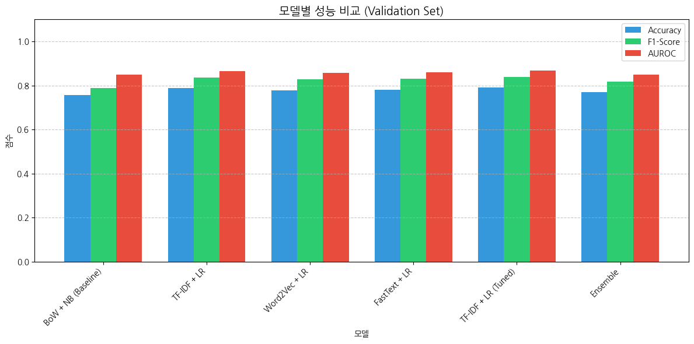
# 최종 모델: TF-IDF + 튜닝된 Logistic Regression
final_model = best_lr
# 테스트 세트 평가
y_test_pred = final_model.predict(X_test_tfidf)
y_test_prob = final_model.predict_proba(X_test_tfidf)[:, 1]
print("=" * 50)
print("🏆 최종 모델 테스트 성능")
print("=" * 50)
print(f"\nTest Accuracy: {accuracy_score(y_test, y_test_pred):.4f}")
print(f"Test Precision: {precision_score(y_test, y_test_pred):.4f}")
print(f"Test Recall: {recall_score(y_test, y_test_pred):.4f}")
print(f"Test F1-Score: {f1_score(y_test, y_test_pred):.4f}")
print(f"Test AUROC: {roc_auc_score(y_test, y_test_prob):.4f}")==================================================
🏆 최종 모델 테스트 성능
==================================================
Test Accuracy: 0.8125
Test Precision: 0.8396
Test Recall: 0.8667
Test F1-Score: 0.8530
Test AUROC: 0.8901📋 Classification Report:
precision recall f1-score support
Negative 0.76 0.72 0.74 699
Positive 0.84 0.87 0.85 1178
accuracy 0.81 1877
macro avg 0.80 0.79 0.80 1877
weighted avg 0.81 0.81 0.81 1877
# 혼동 행렬 시각화
cm = confusion_matrix(y_test, y_test_pred)
plt.figure(figsize=(8, 6))
sns.heatmap(cm, annot=True, fmt='d', cmap='Blues',
xticklabels=['Negative', 'Positive'],
yticklabels=['Negative', 'Positive'])
plt.title('Confusion Matrix', fontsize=14, fontweight='bold')
plt.xlabel('Predicted')
plt.ylabel('Actual')
plt.tight_layout()
plt.show()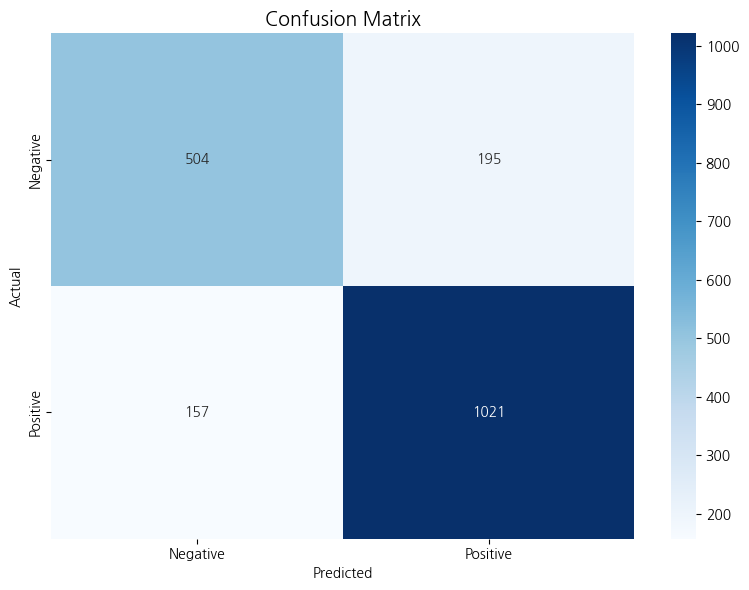
# ROC 곡선
fpr, tpr, thresholds = roc_curve(y_test, y_test_prob)
roc_auc = roc_auc_score(y_test, y_test_prob)
plt.figure(figsize=(8, 6))
plt.plot(fpr, tpr, color='#e74c3c', lw=2, label=f'ROC Curve (AUROC = {roc_auc:.4f})')
plt.plot([0, 1], [0, 1], color='gray', lw=2, linestyle='--', label='Random Classifier')
plt.fill_between(fpr, tpr, alpha=0.3, color='#e74c3c')
plt.xlim([0.0, 1.0])
plt.ylim([0.0, 1.05])
plt.xlabel('False Positive Rate', fontsize=12)
plt.ylabel('True Positive Rate', fontsize=12)
plt.title('Receiver Operating Characteristic (ROC) Curve', fontsize=14, fontweight='bold')
plt.legend(loc='lower right')
plt.grid(alpha=0.3)
plt.tight_layout()
plt.show()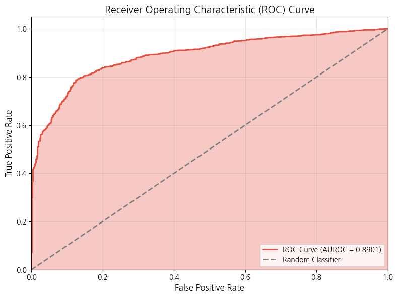
🔍 학습 포인트 #10: 의료 AI에서의 평가 지표 선택
지표별 임상적 의미:
| 지표 | 의미 | 중요 상황 |
|---|---|---|
| Precision | 양성 예측 중 실제 양성 비율 | 불필요한 치료 비용이 클 때 |
| Recall (Sensitivity) | 실제 양성 중 탐지 비율 | 놓치면 위험한 질환 (암 등) |
| F1-Score | Precision-Recall 조화평균 | 균형 잡힌 평가 필요 시 |
| AUROC | 전체적인 분류 성능 | 임계값 독립적 비교 |
의료 텍스트 감정 분석에서: - 부정적 상태(악화)를 놓치면 환자 위험 → Recall 중요 - 불필요한 경보는 의료진 피로 유발 → Precision도 고려 - 따라서 F1-Score가 좋은 종합 지표
# TF-IDF 특성 이름
feature_names = tfidf_vectorizer.get_feature_names_out()
# Logistic Regression 계수
coefficients = final_model.coef_[0]
# 계수 기준 정렬
coef_df = pd.DataFrame({
'feature': feature_names,
'coefficient': coefficients
}).sort_values('coefficient', key=abs, ascending=False)
# 상위 20개 특성
top_features = coef_df.head(20)
print("📊 가장 중요한 특성 (Top 20):")
print(top_features.to_string(index=False))📊 가장 중요한 특성 (Top 20):
feature coefficient
coronary 7.638782
cancer -6.498979
ventricular 6.358257
aortic 5.267339
tumor -5.116387
blood pressure 4.763195
angioplasty 4.605247
heart 4.568562
cirrhosis -4.523986
neoplasm -4.160202
melanoma -4.106996
carcinoma -3.877807
bowel -3.702246
thrombosis 3.570137
aneurysm 3.548197
leukemia -3.538340
cardiovascular 3.531690
esophageal -3.454744
diarrhea -3.413389
colitis -3.212773# 긍정/부정 영향 특성 시각화
top_positive = coef_df.nlargest(10, 'coefficient')
top_negative = coef_df.nsmallest(10, 'coefficient')
fig, axes = plt.subplots(1, 2, figsize=(14, 6))
# 긍정 영향 특성
axes[0].barh(top_positive['feature'], top_positive['coefficient'], color='#2ecc71')
axes[0].set_xlabel('Coefficient')
axes[0].set_title('긍정(Positive) 예측에 기여하는 특성', fontsize=12, fontweight='bold')
axes[0].invert_yaxis()
# 부정 영향 특성
axes[1].barh(top_negative['feature'], top_negative['coefficient'], color='#e74c3c')
axes[1].set_xlabel('Coefficient')
axes[1].set_title('부정(Negative) 예측에 기여하는 특성', fontsize=12, fontweight='bold')
axes[1].invert_yaxis()
plt.tight_layout()
plt.show()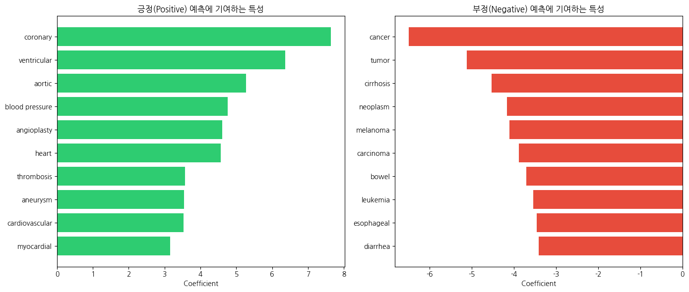
# SHAP Explainer 생성 (Linear model용)
# TF-IDF 행렬을 밀집 배열로 변환
X_test_dense = X_test_tfidf.toarray()
# SHAP 계산 (샘플 제한)
sample_size = min(50, len(X_test_dense))
X_sample = X_test_dense[:sample_size]
# Linear Explainer
explainer = shap.LinearExplainer(final_model, X_train_tfidf.toarray())
shap_values = explainer.shap_values(X_sample)
print(f"📊 SHAP values 계산 완료 (샘플: {sample_size}개)")📊 SHAP values 계산 완료 (샘플: 50개)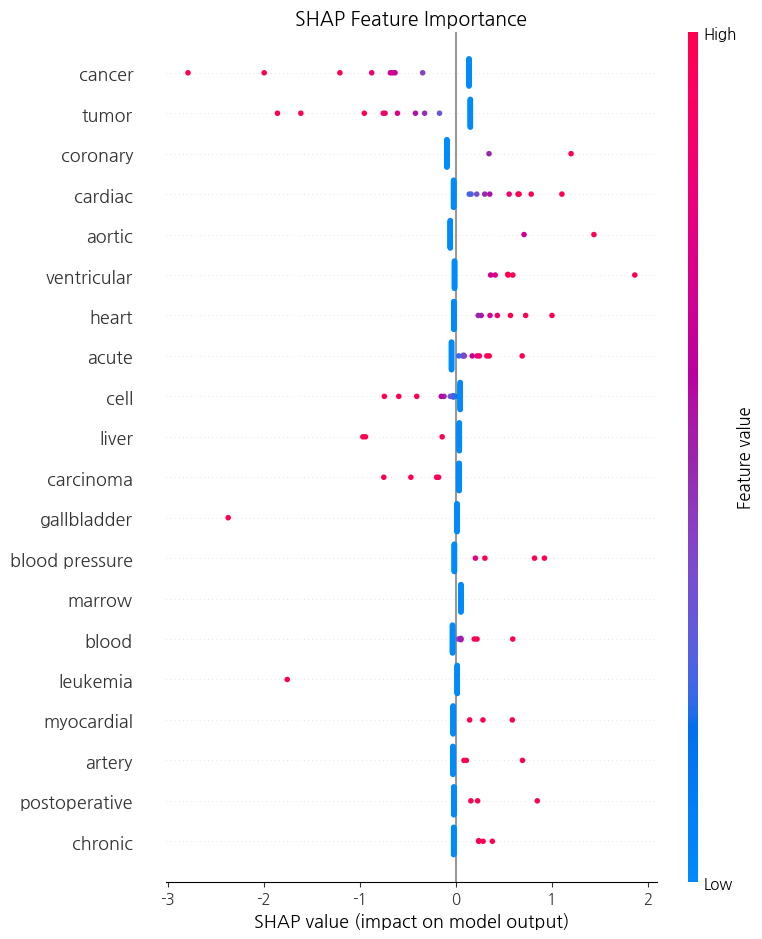
# 개별 예측 해석 (Force Plot 대체: 수동 시각화)
sample_idx = 0
sample_text = X_test.iloc[sample_idx]
sample_pred = final_model.predict(X_test_tfidf[sample_idx])[0]
sample_prob = final_model.predict_proba(X_test_tfidf[sample_idx])[0]
print(f"📝 개별 예측 해석 (샘플 #{sample_idx + 1}):")
print(f"\n텍스트: {sample_text}")
print(f"예측: {'Positive' if sample_pred == 1 else 'Negative'}")
print(f"확률: Positive={sample_prob[1]:.4f}, Negative={sample_prob[0]:.4f}")
# 해당 샘플의 중요 특성
sample_shap = shap_values[sample_idx]
important_features = pd.DataFrame({
'feature': feature_names,
'shap_value': sample_shap
}).sort_values('shap_value', key=abs, ascending=False).head(10)
print(f"\n주요 영향 특성:")
for _, row in important_features.iterrows():
direction = '↑ Positive' if row['shap_value'] > 0 else '↓ Negative'
print(f" {row['feature']}: {row['shap_value']:.4f} ({direction})")📝 개별 예측 해석 (샘플 #1):
텍스트: risk postoperative congestive heart failure identify predictor postoperative congestive heart failure chf high-risk population mainly hypertensive diabetic undergoing elective general operation studied 254 per cent postoperative chf among preoperative cardiac disease previous myocardial infarction valvular disease chf per cent postoperative chf contrast less per cent without cardiac disease less 0001 diabetes also high risk versus per cent less 0005 particularly cardiac disease equal greater millimeter mercury increase decrease intraoperatively mean arterial pressure relation preoperative baseline increased postoperative failure rate less 002 note postoperative failure rate highest among less 500 milliliter per hour net intake input output less 003 risk postoperative chf restricted preoperative symptomatic cardiac disease especially high also diabetes intraoperative fluctuation mean arterial pressure increased probability postoperative failure intraoperative administration higher net volume fluid associated decreased risk
예측: Positive
확률: Positive=0.9725, Negative=0.0275
주요 영향 특성:
postoperative: 0.8503 (↑ Positive)
cardiac: 0.5572 (↑ Positive)
heart: 0.4339 (↑ Positive)
arterial: 0.2926 (↑ Positive)
tumor: 0.1525 (↑ Positive)
myocardial: 0.1454 (↑ Positive)
cancer: 0.1390 (↑ Positive)
hypertensive: 0.1336 (↑ Positive)
diabetes: 0.1289 (↑ Positive)
coronary: -0.0917 (↓ Negative)🔍 학습 포인트 #11: SHAP을 통한 모델 해석
SHAP (SHapley Additive exPlanations): - 게임 이론의 Shapley 값 기반 해석 방법 - 각 특성의 개별 기여도를 정확하게 측정 - 전역적(global) + 국소적(local) 해석 모두 가능
의료 AI에서 해석 가능성이 중요한 이유: 1. 신뢰 구축: 의료진이 AI 권고를 이해하고 수용 2. 오류 탐지: 잘못된 근거로 예측하는 경우 식별 3. 규제 준수: 의료 AI는 설명 가능성 요구 증가 4. 임상 통찰: 새로운 의학적 발견 가능성
# Stratified K-Fold 교차 검증
skf = StratifiedKFold(n_splits=5, shuffle=True, random_state=RANDOM_STATE)
# df 대신 df_binary 사용 (positive/negative만 포함, neutral 제외)
X_full_tfidf = tfidf_vectorizer.fit_transform(df_binary['text_processed'])
y_full = df_binary['label_encoded']
# 최적 파라미터로 모델 재생성
cv_model = LogisticRegression(**grid_search.best_params_, random_state=RANDOM_STATE, max_iter=1000)
# 교차 검증 수행
cv_scores = {
'accuracy': cross_val_score(cv_model, X_full_tfidf, y_full, cv=skf, scoring='accuracy'),
'f1': cross_val_score(cv_model, X_full_tfidf, y_full, cv=skf, scoring='f1'),
'roc_auc': cross_val_score(cv_model, X_full_tfidf, y_full, cv=skf, scoring='roc_auc')
}
print("=" * 50)
print("📊 5-Fold 교차 검증 결과")
print("=" * 50)
for metric, scores in cv_scores.items():
print(f"\n{metric.upper()}:")
print(f" Fold scores: {scores.round(4)}")
print(f" Mean ± Std: {scores.mean():.4f} ± {scores.std():.4f}")==================================================
📊 5-Fold 교차 검증 결과
==================================================
ACCURACY:
Fold scores: [0.7986 0.8038 0.8118 0.8161 0.809 ]
Mean ± Std: 0.8079 ± 0.0061
F1:
Fold scores: [0.8445 0.8468 0.854 0.8576 0.8521]
Mean ± Std: 0.8510 ± 0.0048
ROC_AUC:
Fold scores: [0.8836 0.8853 0.8844 0.8914 0.8881]
Mean ± Std: 0.8865 ± 0.0029# 교차 검증 결과 시각화
fig, ax = plt.subplots(figsize=(10, 6))
metrics = list(cv_scores.keys())
means = [cv_scores[m].mean() for m in metrics]
stds = [cv_scores[m].std() for m in metrics]
x = np.arange(len(metrics))
bars = ax.bar(x, means, yerr=stds, capsize=5, color=['#3498db', '#2ecc71', '#e74c3c'], edgecolor='black')
ax.set_ylabel('Score')
ax.set_title('5-Fold 교차 검증 결과 (Mean ± Std)', fontsize=14, fontweight='bold')
ax.set_xticks(x)
ax.set_xticklabels([m.upper() for m in metrics])
ax.set_ylim(0, 1.1)
# 값 표시
for bar, mean, std in zip(bars, means, stds):
ax.text(bar.get_x() + bar.get_width()/2, bar.get_height() + std + 0.02,
f'{mean:.3f}', ha='center', va='bottom', fontsize=11)
plt.tight_layout()
plt.show()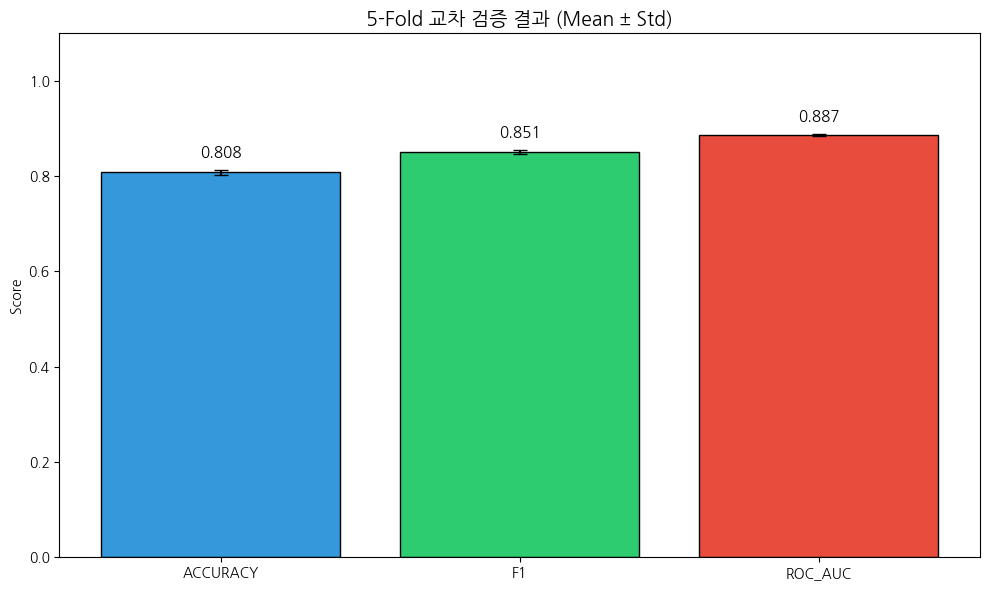
from sklearn.model_selection import learning_curve
# 학습 곡선 계산
train_sizes, train_scores, val_scores = learning_curve(
cv_model, X_full_tfidf, y_full,
train_sizes=np.linspace(0.1, 1.0, 10),
cv=5, scoring='f1', n_jobs=-1
)
# 평균 및 표준편차 계산
train_mean = train_scores.mean(axis=1)
train_std = train_scores.std(axis=1)
val_mean = val_scores.mean(axis=1)
val_std = val_scores.std(axis=1)
# 시각화
plt.figure(figsize=(10, 6))
plt.plot(train_sizes, train_mean, 'o-', color='#3498db', label='Training Score')
plt.fill_between(train_sizes, train_mean - train_std, train_mean + train_std, alpha=0.2, color='#3498db')
plt.plot(train_sizes, val_mean, 'o-', color='#e74c3c', label='Validation Score')
plt.fill_between(train_sizes, val_mean - val_std, val_mean + val_std, alpha=0.2, color='#e74c3c')
plt.xlabel('Training Examples', fontsize=12)
plt.ylabel('F1-Score', fontsize=12)
plt.title('Learning Curve', fontsize=14, fontweight='bold')
plt.legend(loc='lower right')
plt.grid(alpha=0.3)
plt.tight_layout()
plt.show()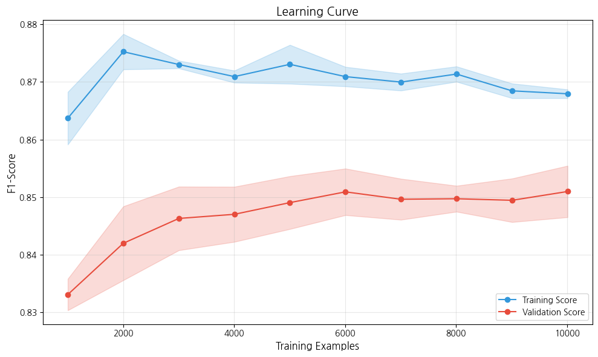
🔍 학습 포인트 #12: 외부 검증과 일반화 성능
외부 검증의 중요성: 1. 과적합 탐지: 학습 데이터에만 잘 맞는 모델 식별 2. 일반화 추정: 새로운 데이터에서의 예상 성능 3. 신뢰 구간: 성능의 변동성 파악
학습 곡선 해석: - 수렴: Train과 Val 점수가 가까워지면 적절한 모델 복잡도 - 과적합: Train 높고 Val 낮으면 모델이 너무 복잡 - 과소적합: 둘 다 낮으면 모델이 너무 단순 - 데이터 부족: Val 점수가 계속 상승하면 더 많은 데이터 필요
# 최종 결과 요약 출력
print("="*70)
print("📋 L2-4 의료 텍스트 감정/톤 분석 - 최종 결과 리포트")
print("="*70)
print("\n📌 프로젝트 개요")
print("-"*50)
print(f" • 목표: 의료 텍스트에서 증상 표현의 긍정/부정 분류")
print(f" • 데이터: {len(df)} 샘플 (Positive: {(y==1).sum()}, Negative: {(y==0).sum()})")
print(f" • 최종 모델: TF-IDF + Logistic Regression (튜닝)")
print("\n📌 전처리 파이프라인")
print("-"*50)
print(f" 1. 토큰화 (NLTK word_tokenize)")
print(f" 2. 불용어 제거 (영어 + 의료 도메인)")
print(f" 3. Lemmatization (WordNetLemmatizer)")
print(f" 4. 의학 용어 정규화 (약어 확장, 동의어 통합)")
print(f" • 어휘 크기 감소: {unique_basic} → {unique_final} ({(1-unique_final/unique_basic)*100:.1f}% 감소)")
print("\n📌 임베딩 기법 비교")
print("-"*50)
print(f" | {'기법':<20} | {'Validation F1':>15} |")
print(f" |{'-'*20}|{'-'*17}|")
for model, f1 in zip(results_df['Model'][:4], results_df['F1-Score'][:4]):
print(f" | {model:<20} | {f1:>15.4f} |")
print("\n📌 최종 모델 성능")
print("-"*50)
print(f" • Test Accuracy: {accuracy_score(y_test, y_test_pred):.4f}")
print(f" • Test Precision: {precision_score(y_test, y_test_pred):.4f}")
print(f" • Test Recall: {recall_score(y_test, y_test_pred):.4f}")
print(f" • Test F1-Score: {f1_score(y_test, y_test_pred):.4f}")
print(f" • Test AUROC: {roc_auc_score(y_test, y_test_prob):.4f}")
print("\n📌 교차 검증 결과 (5-Fold)")
print("-"*50)
print(f" • F1-Score: {cv_scores['f1'].mean():.4f} ± {cv_scores['f1'].std():.4f}")
print(f" • AUROC: {cv_scores['roc_auc'].mean():.4f} ± {cv_scores['roc_auc'].std():.4f}")
print("\n📌 주요 예측 특성 (Top 5)")
print("-"*50)
print(" 긍정(Positive) 예측 기여:")
for _, row in top_positive.head(5).iterrows():
print(f" • {row['feature']}: {row['coefficient']:.4f}")
print(" 부정(Negative) 예측 기여:")
for _, row in top_negative.head(5).iterrows():
print(f" • {row['feature']}: {row['coefficient']:.4f}")
print("\n" + "="*70)======================================================================
📋 L2-4 의료 텍스트 감정/톤 분석 - 최종 결과 리포트
======================================================================
📌 프로젝트 개요
--------------------------------------------------
• 목표: 의료 텍스트에서 증상 표현의 긍정/부정 분류
• 데이터: 14438 샘플 (Positive: 7856, Negative: 4657)
• 최종 모델: TF-IDF + Logistic Regression (튜닝)
📌 전처리 파이프라인
--------------------------------------------------
1. 토큰화 (NLTK word_tokenize)
2. 불용어 제거 (영어 + 의료 도메인)
3. Lemmatization (WordNetLemmatizer)
4. 의학 용어 정규화 (약어 확장, 동의어 통합)
• 어휘 크기 감소: 54895 → 48658 (11.4% 감소)
📌 임베딩 기법 비교
--------------------------------------------------
| 기법 | Validation F1 |
|--------------------|-----------------|
| BoW + NB (Baseline) | 0.7881 |
| TF-IDF + LR | 0.8362 |
| Word2Vec + LR | 0.8294 |
| FastText + LR | 0.8314 |
📌 최종 모델 성능
--------------------------------------------------
• Test Accuracy: 0.8125
• Test Precision: 0.8396
• Test Recall: 0.8667
• Test F1-Score: 0.8530
• Test AUROC: 0.8901
📌 교차 검증 결과 (5-Fold)
--------------------------------------------------
• F1-Score: 0.8510 ± 0.0048
• AUROC: 0.8865 ± 0.0029
📌 주요 예측 특성 (Top 5)
--------------------------------------------------
긍정(Positive) 예측 기여:
• coronary: 7.6388
• ventricular: 6.3583
• aortic: 5.2673
• blood pressure: 4.7632
• angioplasty: 4.6052
부정(Negative) 예측 기여:
• cancer: -6.4990
• tumor: -5.1164
• cirrhosis: -4.5240
• neoplasm: -4.1602
• melanoma: -4.1070
======================================================================본 워크북에서 개발한 의료 텍스트 감정 분석 모델은 다음과 같은 임상적 활용 가능성을 가집니다:
기본 실습에서 배운 내용을 바탕으로 파라미터를 변경하거나 다른 기법을 적용해보면서 응용력을 강화합니다.
Q1. TF-IDF에서 ngram_range를 (1,3)으로 변경하면 성능이 어떻게 변화하는가? Trigram이 의료 텍스트에서 유용한 이유는 무엇일까?
Q2. Word2Vec의 vector_size를 50, 200, 300으로 변경하여 성능을 비교해보시오. 차원 수와 성능 사이의 관계는 어떠한가?
Q3. 사전 학습된 의료 도메인 Word2Vec 임베딩(예: BioWordVec)을 사용하면 성능이 향상되는지 실험해보시오.
Q4. 현재 이진 분류를 다중 클래스 분류(예: 호전/유지/악화)로 확장해보시오. 어떤 추가 전처리가 필요한가?
Q5. SHAP 분석에서 발견한 중요 특성들이 임상적으로 타당한지 의료 전문가 관점에서 검토하고, 잠재적 편향을 식별해보시오.
본 워크북을 통해 의료 텍스트에서 감정/톤을 분석하는 NLP 파이프라인을 구축했습니다:
핵심 교훈: - 도메인 지식의 중요성: 의학 용어 정규화가 성능 향상에 기여 - 점진적 개선: Baseline부터 시작해 체계적으로 성능 향상 - 해석 가능성: 의료 AI는 예측 근거를 설명할 수 있어야 함 - 외부 검증: 과적합 방지를 위한 교차 검증 필수